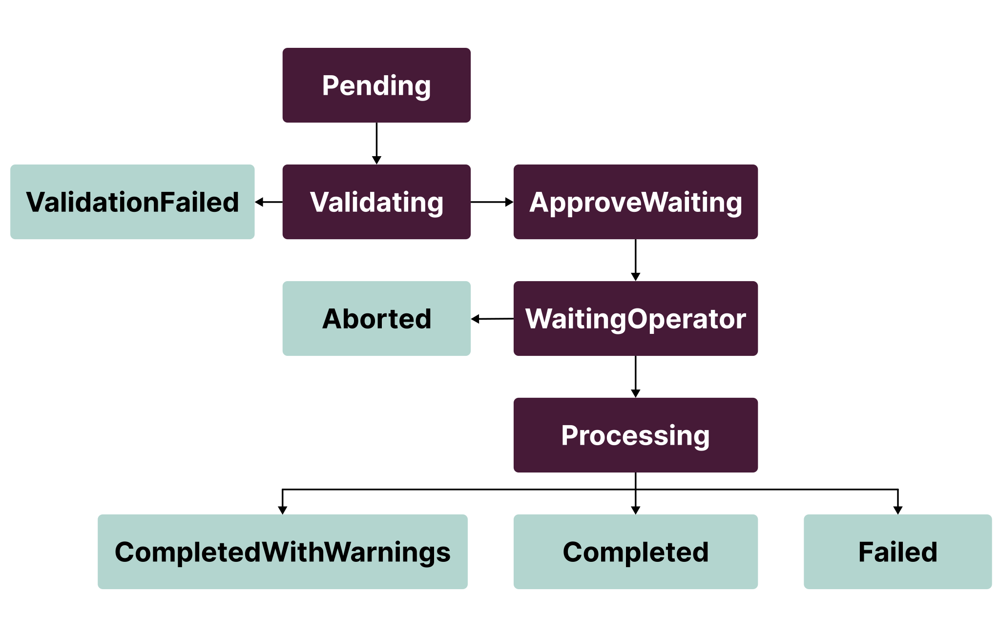

CephOsdRemoveTask custom resource#
This section describes the CephOsdRemoveTask custom resource specification.
For the procedure workflow, see Creating a Ceph OSD remove task.
Spec parameters#
nodes- Map of Kubernetes nodes that specifies how to remove Ceph OSDs: by host-devices or OSD IDs. For details, see the Nodes parameters section below.approve- Flag that indicates whether a request is ready to execute removal. Can only be manually enabled by the Operator. Defaults tofalse.resolved- Optional. Flag that marks a finished request, even if it failed, to keep it in historydo not block any further operations.
Nodes parameters#
completeCleanup- Flag used to clean up an entire node and drop it from the CRUSH map. Mutually exclusive withcleanupByDeviceandcleanupByOsd.dropFromCrush- Flag which is the same to completeCleanup, but without device cleanup on node May be useful when node is going to be reprovisioned and no need to spend time for device cleanup.-
cleanupByDevice- List that describes devices to clean up by name or device symlink as they were specified in RookCephCluster(or PelagiaCephDeployment). Mutually exclusive withcompleteCleanupandcleanupByOsd. Includes the following parameters:device- Physical device name, e.g.sdb,/dev/nvme1e0, or device symlink (by-pathorby-id), e.g./dev/disk/by-path/pci-0000:00:1c.5or/dev/disk/by-id/scsi-SATA_HGST_HUS724040AL_PN1334PEHN18ZS.skipDeviceCleanup- Optional. Flag that indicates whether to skip the device cleanup. Defaults tofalse. If set totrue, the device will not be cleaned up, but OSDs running on this device will be removed from the CRUSH map and deleted.
Warning
We do not recommend setting device name or device
by-pathsymlink in thecleanupByDevicefield as these identifiers are not persistent and can change at node boot. Remove Ceph OSDs withby-idsymlinks or usecleanupByOsdIdinstead. For details, see Addressing Ceph storage devices. -
cleanupByOsd- List of Ceph OSD IDs to remove. Mutually exclusive withcompleteCleanupandcleanupByDevice. Includes the following parameters:id- Ceph OSD ID to remove.skipDeviceCleanup- Optional. Flag that indicates whether to skip the device cleanup. Defaults tofalse. If set totrue, the device will not be cleaned up, but OSDs running on this device will be removed from the CRUSH map and deleted.
-
cleanupStrayPartitions- Flag used to for cleaning disks with osd lvm partitions which not belong to current cluster, for example, when disk was not cleaned up previously.
Example of CephOsdRemoveTask with spec.nodes
apiVersion: lcm.mirantis.com/v1alpha1
kind: CephOsdRemoveTask
metadata:
name: remove-osd-task
namespace: pelagia
spec:
nodes:
"node-a":
completeCleanup: true
"node-b":
cleanupByOsd:
- id: 1
- id: 15
- id: 25
"node-c":
cleanupByDevice:
- device: "sdb"
- device: "/dev/disk/by-path/pci-0000:00:1c.5"
- device: "/dev/disk/by-id/scsi-SATA_HGST_HUS724040AL_PN1334PEHN18ZS"
"node-d":
dropFromCrush: true
The example above includes the following actions:
- For
node-a, full cleanup, including all OSDs on the node, node drop from the CRUSH map, and cleanup of all disks used for Ceph OSDs on this node. - For
node-b, cleanup of Ceph OSDs with IDs1,15, and25along with the related disk information. - For
node-c, cleanup of the device with namesdb, the device with path ID/dev/disk/by-path/pci-0000:00:1c.5, and the device withby-id/dev/disk/by-id/scsi-SATA_HGST_HUS724040AL_PN1334PEHN18ZS, dropping of OSDs running on these devices. - For
node-d, cleanup, including all OSDs on the node, node drop from the CRUSH map but skip cleanup of all disks used for Ceph OSDs on this node.
Status fields#
phase- Describes the current task phase.phaseInfo- Additional human-readable message describing task phase.removeInfo- The overall information about the Ceph OSDs to remove: final removal map, issues, and warnings. Once theProcessingphase succeeds,removeInfowill be extended with the removal status for each node and Ceph OSD. In case of an entire node removal, the status will contain the status itself and an error message, if any.messages- Informational messages describing the reason for the request transition to the next phase.conditions- History of spec updates for the request.
CephOsdRemoveTask phases are moving in the following order:

Here are the following final phases:
ValidationFailed- The task is not valid and cannot be processed.Aborted- The task detected inappropriate RookCephClusterspec changes after receiving approval.Completed- The task is successfully completed.CompletedWithWarnings- The task is completed but some steps are skipped.Failed- The task is failed on one of the steps.
Remove info fields#
cleanupMap- Map of desired nodes and devices to clean up. Based on this map, the cloud operator decides whether to approve the current task or not. After approve, it will contain all statuses and errors happened during cleanup.issues- List of error messages found during validation or processing phaseswarnings- List of non-blocking warning messages found during validation or processing phases
cleanupMap is a map of nodes to devices contains the following fields:
completeCleanup- Flag that indicates whether to perform a full cleanup of the node.dropFromCrush- Flag that indicates whether to drop the node from the CRUSH map without node cleanup.-
osdMapping- Map of Ceph OSD IDs to the device names or symlink used for the Ceph OSD. It includes device info and statuses of Ceph OSD remove itself, Rook Ceph OSD deployment remove, Ceph OSD device cleanup job.CephOsdRemoveTaskosdMappingexample outputstatus: removeInfo: cleanupMap: "node-a": completeCleanup: true osdMapping: "2": deviceMapping: "sdb": path: "/dev/disk/by-path/pci-0000:00:0a.0" partition: "/dev/ceph-a-vg_sdb/osd-block-b-lv_sdb" type: "block" class: "hdd" zapDisk: true "6": deviceMapping: "sdc": path: "/dev/disk/by-path/pci-0000:00:0c.0" partition: "/dev/ceph-a-vg_sdc/osd-block-b-lv_sdc-1" type: "block" class: "hdd" zapDisk: true "11": deviceMapping: "sdc": path: "/dev/disk/by-path/pci-0000:00:0c.0" partition: "/dev/ceph-a-vg_sdc/osd-block-b-lv_sdc-2" type: "block" class: "hdd" zapDisk: true -
nodeIsDown- Flag that indicates whether the node is down. volumeInfoMissed- Flag that indicates whetherdisk-daemoncollected device info or not.hostRemoveStatus- Node removal status if node is marked for complete cleanup.
Remove info examples#
Example of status.removeInfo after successful Validation
status:
removeInfo:
cleanupMap:
"node-a":
completeCleanup: true
osdMapping:
"2":
deviceMapping:
"sdb":
path: "/dev/disk/by-path/pci-0000:00:0a.0"
partition: "/dev/ceph-a-vg_sdb/osd-block-b-lv_sdb"
type: "block"
class: "hdd"
zapDisk: true
"6":
deviceMapping:
"sdc":
path: "/dev/disk/by-path/pci-0000:00:0c.0"
partition: "/dev/ceph-a-vg_sdc/osd-block-b-lv_sdc-1"
type: "block"
class: "hdd"
zapDisk: true
"11":
deviceMapping:
"sdc":
path: "/dev/disk/by-path/pci-0000:00:0c.0"
partition: "/dev/ceph-a-vg_sdc/osd-block-b-lv_sdc-2"
type: "block"
class: "hdd"
zapDisk: true
"node-b":
osdMapping:
"1":
deviceMapping:
"sdb":
path: "/dev/disk/by-path/pci-0000:00:0a.0"
partition: "/dev/ceph-b-vg_sdb/osd-block-b-lv_sdb"
type: "block"
class: "ssd"
zapDisk: true
"15":
deviceMapping:
"sdc":
path: "/dev/disk/by-path/pci-0000:00:0b.1"
partition: "/dev/ceph-b-vg_sdc/osd-block-b-lv_sdc"
type: "block"
class: "ssd"
zapDisk: true
"25":
deviceMapping:
"sdd":
path: "/dev/disk/by-path/pci-0000:00:0c.2"
partition: "/dev/ceph-b-vg_sdd/osd-block-b-lv_sdd"
type: "block"
class: "ssd"
zapDisk: true
"node-c":
osdMapping:
"0":
deviceMapping:
"sdb":
path: "/dev/disk/by-path/pci-0000:00:1t.9"
partition: "/dev/ceph-c-vg_sdb/osd-block-c-lv_sdb"
type: "block"
class: "hdd"
zapDisk: true
"8":
deviceMapping:
"sde":
path: "/dev/disk/by-path/pci-0000:00:1c.5"
partition: "/dev/ceph-c-vg_sde/osd-block-c-lv_sde"
type: "block"
class: "hdd"
zapDisk: true
"sdf":
path: "/dev/disk/by-path/pci-0000:00:5a.5",
partition: "/dev/ceph-c-vg_sdf/osd-db-c-lv_sdf-1",
type: "db",
class: "ssd"
During the Validation phase, the provided information was validated and
reflects the final map of the Ceph OSDs to remove:
- For
node-a, Ceph OSDs with IDs2,6, and11will be removed with the related disk and its information: all block devices, names, paths, and disk class. - For
node-b, the Ceph OSDs with IDs1,15, and25will be removed with the related disk information. - For
node-c, the Ceph OSD with ID8will be removed, which is placed on the specifiedsdbdevice. The related partition on thesdfdisk, which is used as the BlueStore metadata device, will be cleaned up keeping the disk itself untouched. Other partitions on that device will not be touched.
Example of removeInfo with removeStatus succeeded
status:
removeInfo:
cleanupMap:
"node-a":
completeCleanup: true
hostRemoveStatus:
status: Removed
osdMapping:
"2":
removeStatus:
osdRemoveStatus:
status: Removed
deploymentRemoveStatus:
status: Removed
name: "rook-ceph-osd-2"
deviceCleanUpJob:
status: Finished
name: "job-name-for-osd-2"
deviceMapping:
"sdb":
path: "/dev/disk/by-path/pci-0000:00:0a.0"
partition: "/dev/ceph-a-vg_sdb/osd-block-b-lv_sdb"
type: "block"
class: "hdd"
zapDisk: true
Example of removeInfo with removeStatus failed
status:
removeInfo:
cleanupMap:
"node-a":
completeCleanup: true
osdMapping:
"2":
removeStatus:
osdRemoveStatus:
error: "retries for cmd ‘ceph osd ok-to-stop 2’ exceeded"
status: Failed
deviceMapping:
"sdb":
path: "/dev/disk/by-path/pci-0000:00:0a.0"
partition: "/dev/ceph-a-vg_sdb/osd-block-b-lv_sdb"
type: "block"
class: "hdd"
zapDisk: true
Example of removeInfo with removeStatus failed by timeout
status:
removeInfo:
cleanupMap:
"node-a":
completeCleanup: true
osdMapping:
"2":
removeStatus:
osdRemoveStatus:
error: Timeout (30m0s) reached for waiting pg rebalance for osd 2
status: Failed
deviceMapping:
"sdb":
path: "/dev/disk/by-path/pci-0000:00:0a.0"
partition: "/dev/ceph-a-vg_sdb/osd-block-b-lv_sdb"
type: "block"
class: "hdd"
zapDisk: true
In case of failures similar to the examples above, review the pelagia-lcm-controller logs and both statuses of Rook CephCluster and Pelagia CephDeploymentHealth.
Such failures may simply indicate timeout and retry issues. If no other issues were found, re-create the request with a new name and skip adding successfully removed Ceph OSDS or Ceph nodes.